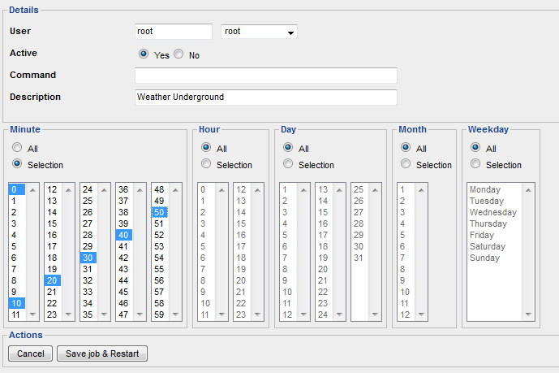

I am trying to get a reliable way of getting weather data from Weatherunderground. From Use XML Data Sources I had a lot of help but not sufficient for my knowledge.
I want to get at a 10 minute interval a xml file that is stored on my synology (/volume1/@appstore/OpenRemote/webapps/private/). The XML file should be named forecast.xml.
With the script below (from the thread earlier mentioned) it should work.
I have stored this script at /volume1/@appstore/OpenRemote/webapps/private/script/weather.sh
Is this a good location or should it be placed elsewhere?
Now my questions:
How can I run this script using crontab.
I have installed cronjob editor on my Synology to help. But I am stuck.
I am able to create a new cronjob but I don't know the command I have to use.

After this I need to manage how to be able to read the xml file from a HTTP call.
I see the Mr. Zanstra was able to read the file and extract some info. When I use his example I do not get any response.
Of course I adjusted the URL to my location.
I understand it is a lot of info and many questions. But it would be super when I finally get it up and running.
Of course I will share the results so others are able to use the info.
{kind=link}
{kind=link}
{kind=link}
{kind=link}
|
The command in crontab should be: /volume1/@appstore/OpenRemote/webapps/private/script/weather.sh
Make sure this script has read/write/execute permissions. Owner:OpenRemote Group:Users In a terminal session I did edit with VI the file /etc/crontab #minute hour mday month wday who command
*/14 * * * * root /volume1/@appstore/OpenRemote/webapps/private/weatherlogger.sh
I do not know the cronjob editor. This makes that Wunderground is read every 14 minutes. The 14 minutes were set to avoid exceeding the allowed requests underthe free licence. |
|
Thanks Mr. Zanstra to help me out. The crontab works. It generates the file every 15 minutes. But I still can not acces the file from within openremote. I have tried to switch rights (Owner and Group)from root to openremote and viceversa. But still no luck. In the thread Get Weather information from XML it is mentioned that a tomcat server is used. Found the solution! You just need to use the port set at the controller. In my case the URL is : http://10.10.10.10:18581/private/NIJMEGEN.xml Now I can set up several commands to extract the data using Xpath. |
Tomcat is always running |